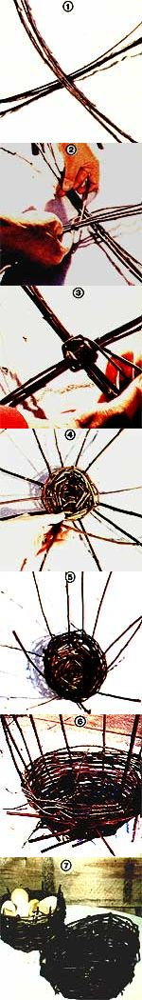

Woven baskets are ideal containers to use for stashing your gear neatly and conveniently. Unfortunately, the commercially available catchalls are often flimsy, monochromatic, and just a bit commonplace . . . not to mention expensive! You can, however, make your own beautiful hampers from free-for-the-gathering raw materials ... most of which you'll find growing in your own back yard. Twig baskets are not only simple to put together (you can assemble a medium-sized container-such as the one shown in the photos-in an hour), but they're surprisingly sturdy as well ... and will provide you with handsome stowage for years. Best of all, your handiwork will be uniquely yours . . . you won't find duplicates in the local dime store!
Thanks to Mother Nature and the variety of supplies she has to offer, your basketry will have a character all its own. You won't need fancy dyes to color the twigs you collect, since their bark will already be painted in natural shades of green, grey, brown, and red . . . each hue adding a distinctive touch to the finished product.
Just about anything goes when it comes to your choice of materials . . . most young branches or twigs will do just fine. A lot of vines are also ideal, since their long and pliable stems can easily be woven into a strong basket.
In addition, small deciduous shrubs usually sport long shoots near the bottom of the plant, and those sprouts will be especially long (and useful) if the bush is growing in a shady area. Other good weaving materials include palm leaves and the "sucker" shoots that spring from the stems of fruit trees. You might also look along streams and rivers for the long branches of willow trees . . . or even use split bamboo, if you're lucky enough to find a stand of the valuable plant.
The branches and vines you choose should be as long as possible . . . but they must be at least two feet in length if you want to end up with a basket of practical size. You'll need to cut a bundle of 30 to 50 young shoots, and strip off all the leaves and side twigs.
You can either work with the fresh cuttings right away, or dry the material for a few months and make the baskets later. If you do choose to "go green", you can whip up a container in almost no time at all . . . but beware! The branches will eventually dry and shrink, resulting in a looser weave. For that reason, a green basket generally isn't very sturdy ... it will be great to use for shelf storage purposes, but may fall apart if it's handled too much.
So when you need a more durable holder cut your twigs in advance and let them dry well. Then, before starting to weave, soak the brittle branches in water for about three days to restore their flexibility. (If the bathtub isn't available for that long, you can always use a galvanized tub to wet down the vines.)
Whether you're working with green or dry shoots, begin the weaving process by selecting a number of twigs of about equal length .. . to form the ribs of your basket. Lay three or four of the sticks side by side on the ground (or on any flat surface), alternating their thick (butt) ends with the tapering tips. Then lay an equal number of stems across the first bunch . . . so the two groups of twigs intersect at right angles in the center, as shown in Photo 1.
Now choose your first "weaver" branch and work it between your fingers until it's nice and pliable . . . when the twig will flex easily without breaking, you're ready to start putting the base of the basket together. Bend the weaver at a point about one-third its length, and loop it-at the bend-around one of the four bundles of ribs. The two halves of the weaver will cross as you move both its ends toward the next bundle of twigs (see Photo 2). Weave around the center (always in a clockwise direction) by alternating the two halves of your vine . . . one end will cross over the bundle of ribs while the other tip passes under that same bunch, and vice versa for the next bundle (as illustrated in Photo 3).
Keep on binding the ribs together in this way until the shorter section of the weaver is used up. When you're left with only the long end, divide the rib bundles into separate branches and pull them out into an evenly spaced radial arrangement . . . then use up the long end of your weaver by simply threading it under and over those individual ribs. When you come to the end of the twig, you'll need to anchor its last couple of inches. Just jab the free end through the woven lattice, toward the center of the basket. If the twig pokes out the other side, don't worry ... you can trim off any loose ends later.
Now take a second weaver and nudge its tapered tip into the previous work to secure it, just as you did with the last end of the first branch. Once it's attached, you can start lacing the new twig through the ribs . . . continuing where you left off with the first weaver. Work the vines together as tightly as possible, keeping each new woven circle close to the previous one . . . as in Photo 4.
Pretty soon the section of flat weaving will be as wide as you want the base of your basket to be . . . and that's when your creativity will begin to figure in the construction. To form the sides of the container, simply force the ribs upward into a vertical position while you continue to weave through them. This process will take a little muscle at first . . . but-as you thread more and more rows of weavers you'll find that the ribs become easier to mold into position (see Photo 5).
You can literally shape your basket by changing the angle at which you secure the ribs. A frame with slightly bent spokes will have gradually sloping sides, for instance, while sharply angled ribs will result in a basket with nearly vertical walls. If you want a round container, you should force all the ribs up at the same angle . . . for an oval one, bring the side pieces up more steeply than those at the ends. With a little ingenuity and experimentation, you can even construct a square or rectangular vessel . . . or one of just about any other contour you can dream up!
Continue to weave the branches along as you flex the ribs up . . . and always remember to alternate-over and under-as you go. (At this point, you can also interchange layers of different kinds of twigs and vines to produce a multicolored and banded effect.)
Your unfinished creation will look pretty wild-with spikes sticking out at the top edge and the weaver ends poking through the body of the basket-but it should be, by this time, holding together well (as illustrated in Photo 6).
When the container reaches the depth you want, force the free end of your last weaver through as many layers of the work as possible, and try to make it end up on the inside of the twig network! Do the same with all the other weaver ends . . . anchoring each one on the inner side of the meshwork.
Finally (using a knife or pair of pruning shears), trim off any extra ends, including the points of the ribs. If you want to make your completed product a little stronger, prune the protruding ribs to about four inches ... and then fold each tip back down into the weaving for a neat, finished look (see Photo 7).
So there you have it, backyard artisans ... a handsome, natural basket, handcrafted in an hour and serviceable for years!
EDITOR'S NOTE: Ifyou'd like more information on weaving with primitive materials, check into Natural Basketry by Carol and Dan Hart . . . which is available from many bookstores or-for $7.95 plus 95 cents shipping and handling-from Mother's Bookshelf, P.O. Box 70, Hendersonville, North Carolina 28791.
|
 |
|
|